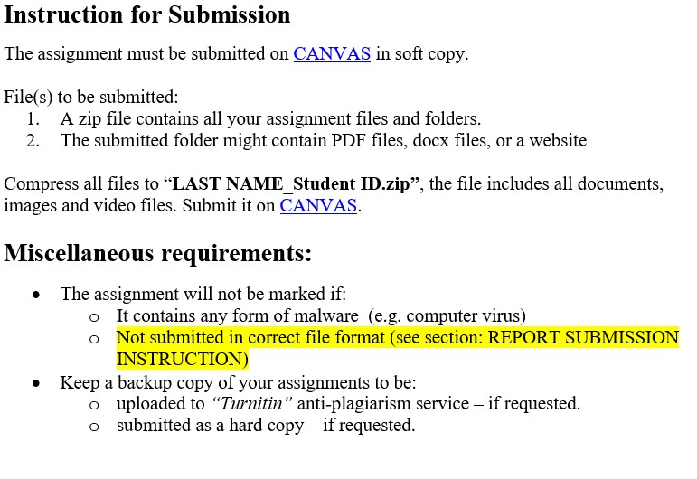

The assignment has 4 parts:
(35 Marks)
Aims to give students an understanding of how computer systems represent real-life data such as positive, negative numbers, floating point numbers, text, etc. , at the lowest level seen by the programmer, namely the binary numbers.
View part »(30 Marks)
It prepares students with the ability to install multi-operating systems using VirtualBox (https://www.virtualbox.org/) and comparatively evaluate the Linux/UNIX Operating Systems (OS). This assignment is also prepared for students to understand the basic concepts covering Linux/UNIX file systems, commands, and working environments.
View part »(25 Marks)
It helps students understand the basic idea of contemporary Machine Learning and Deep Learning using PyTorch (https://www.pytorch.org/) and Google Colab (https://colab.research.google.com/).
View part »(10 Marks)
It provides students some foundations of Hypertext Markup Language (HTML); you will have a chance to learn about HTML elements and structure. Students will build some simple blocks of a website.
View part »This assignment will have a total of 100 marks (Contribution to final mark: 40%)
It will be due by the 9th of April 2023 11:59PM
